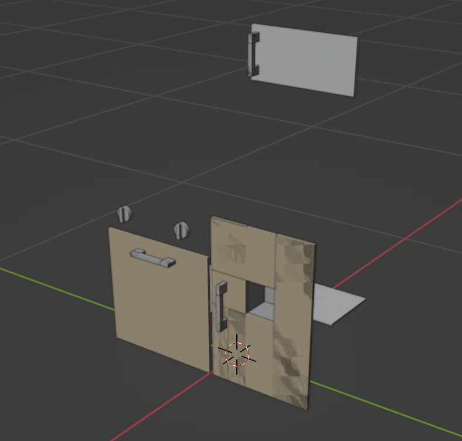
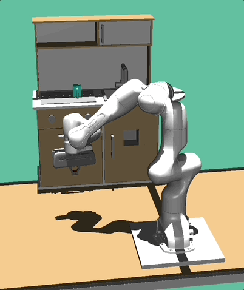
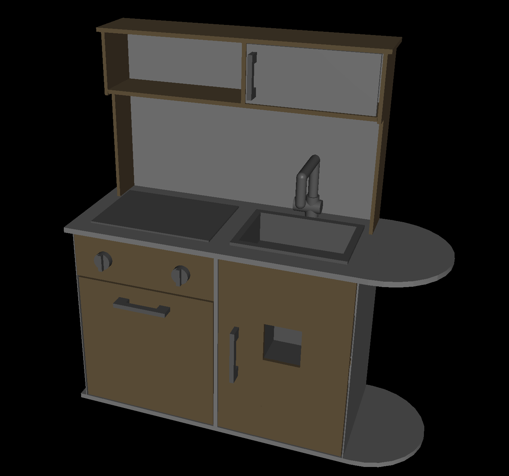

Method at a glance
How it works
- 01Model the kitchenTranslate physical measurements into collision geometry, articulated parts, and movable objects.
- 02Expose interactionsProvide programmatic access to kitchen states and component poses.
- 03Record and refine actionsUse demonstrations for constrained motions and movement primitives to smooth the recorded trajectories.
Project workflow schematic.
An environment for household manipulation
The project started by measuring the laboratory kitchen and reproducing its structure in MuJoCo. The documented model contains 34 bodies, 72 geometries, and seven joints, including two free joints. Cabinet doors and stove knobs use hinge joints; the removable tray and detachable objects use free joints. Collision geometry and mechanical stops constrain how components can move.
The scene supports opening cabinet doors, rotating knobs, placing a cup at a water dispenser, and interacting with a removable shelf and sliding tray. I also wrote a Blender conversion script that reads the MuJoCo XML structure and exports movable components as separate assets for HoloLens interaction.


From scene geometry to action
A dedicated MjKitchen class exposes joint states and object positions and orientations, including batch access to component poses. This makes the kitchen usable as an experimental environment rather than merely a visual model.
Actions with a known target location can be implemented directly. Door opening is more constrained: a demonstration can first pull the handle and then switch to pushing when the arm approaches a singular configuration. Recorded trajectories are processed using the laboratory’s probabilistic movement-primitive implementation to produce smoother joint-space motion. The data is collected robot-motion demonstrations, rather than a named image dataset.


Practical lessons
Smoothing is not automatically sufficient for successful interaction. A fitted trajectory can move the arm closer to a singularity, erase a necessary pause between action stages, or gradually release a gripper when a sharp state change is required. The report discusses collecting demonstrations with greater clearance, balancing the number of basis functions, and thresholding the gripper state.
The work brings together environment construction, interaction APIs, and demonstration-based motion processing as a foundation for further household-robot imitation-learning experiments.
A test with a modified door-handle position did not generalize successfully. The report identifies this as an open issue: matching a demonstrated trajectory is harder when contact geometry changes, even if the movement primitive gives smooth motion.
Project visuals


Based on my September 2023 practical-course report and the saved simulation assets and demonstrations used in my presentation.